import fastai
print(fastai.__version__)2.8.4import fastai
print(fastai.__version__)2.8.4seed_everything (seed=69)
Seeds random, os.environ["PYTHONHASHSEED"], numpy, torch.cuda and torch.backends.
print_competition_data (p:pathlib.Path)
path = Path("../data/")The path variable is a os.pathlib.Path object that points to the competition data.
To print all the files this directory use the print_competition_data function.
print_competition_data(path)..\data\hard_negatives_patterns.txt
..\data\predictions
..\data\sample_submission.csv
..\data\submissions
..\data\test_images
..\data\train.csv
..\data\train_imagesThe competition files in detail:
ClassId = [1, 2, 3, 4])ImageId 4 rows, one for each of the 4 defect classestrain_path = path/"train_images"
test_path = path/"test_images"
train_pfiles = get_image_files(train_path)
test_pfiles = get_image_files(test_path)The training data includes:
faulty images: images that have at least one defect
hard negative images: images with no defects
train_pfiles(#12568) [Path('../data/train_images/0002cc93b.jpg'),Path('../data/train_images/00031f466.jpg'),Path('../data/train_images/000418bfc.jpg'),Path('../data/train_images/000789191.jpg'),Path('../data/train_images/0007a71bf.jpg'),Path('../data/train_images/000a4bcdd.jpg'),Path('../data/train_images/000f6bf48.jpg'),Path('../data/train_images/0014fce06.jpg'),Path('../data/train_images/001982b08.jpg'),Path('../data/train_images/001d1b355.jpg')...]The get_train_df function returns the DataFrame from the train.csv file, only faulty image names if only_faulty, with the training images metadata: - ImageId: image name
ClassId: the class type
EncodedPixels: the encoded pixels follows a run-length encoding rule, a sequence of pair values that contains a start position and a run length with the space as the delimiter. E.g. 1 3 10 5 means pixels (1,2,3) and (10,11,12,13,14).
Each Image may have no defects, a single defect, or multiple defects.
get_train_df (path, only_faulty=False, pivot=False, hard_negatives=False)
Get training DataFrame with all the images in data/train_images. Returns only the faulty images if only_faulty.
get_train_pivot (df)
Summarize the training csv with ClassId as columns and values EncodedPixels
hard_neg_patterns = pd.read_csv(
path/"hard_negatives_patterns.txt", header=None, names=["ImageId"])hard_neg_patterns.head()| ImageId | |
|---|---|
| 0 | 000789191.jpg |
| 1 | 00d7ae946.jpg |
| 2 | 01b237ab8.jpg |
| 3 | 01d590c5f.jpg |
| 4 | 01e501f99.jpg |
In hard_neg_patterns there are the ImageIds of training images with some patterns (from this kernel).
train = get_train_df(path, only_faulty=False)
assert isinstance(train, pd.DataFrame)
train_faulty = train.loc[train["status"]=="faulty"]
assert not train.ImageId_ClassId.duplicated().any(), "Found ImageId_ClassId duplicates"train.describe(include='all')[:4]| ImageId | ClassId | EncodedPixels | status | ImageId_ClassId | |
|---|---|---|---|---|---|
| count | 12997 | 12997.0 | 12997.0 | 12997 | 12997 |
| unique | 12568 | NaN | 7096.0 | 2 | 12997 |
| top | ef24da2ba.jpg | NaN | -1.0 | faulty | 0002cc93b.jpg_1 |
| freq | 3 | NaN | 5902.0 | 7095 | 1 |
print(train.shape)
train.head(2)(12997, 5)| ImageId | ClassId | EncodedPixels | status | ImageId_ClassId | |
|---|---|---|---|---|---|
| 0 | 0002cc93b.jpg | 1 | 29102 12 29346 24 29602 24 29858 24 30114 24 30370 24 30626 24 30882 24 31139 23 31395 23 31651 23 31907 23 32163 23 32419 23 32675 23 77918 27 78174 55 78429 60 78685 64 78941 68 79197 72 79452 77 79708 81 79964 85 80220 89 80475 94 80731 98 80987 102 81242 105 81498 105 81754 104 82010 104 82265 105 82521 31 82556 69 82779 27 82818 63 83038 22 83080 57 83297 17 83342 50 83555 13 83604 44 83814 8 83866 37 84073 3 84128 31 84390 25 84652 18 84918 8 85239 10 85476 29 85714 47 85960 57 86216 57 86471 58 86727 58 86983 58 87238 59 87494 59 87750 59 88005 60 88261 60 88517 60 88772 61 89028 53... | faulty | 0002cc93b.jpg_1 |
| 1 | 00031f466.jpg | 0 | -1 | no_faulty | 00031f466.jpg_0 |
missing_imgs = train["ImageId"].map(lambda x: not ((path/"train_images"/str(x)).is_file()))
print(missing_imgs.sum())0print(train_faulty.shape)
train_faulty.head(2)(7095, 5)| ImageId | ClassId | EncodedPixels | status | ImageId_ClassId | |
|---|---|---|---|---|---|
| 0 | 0002cc93b.jpg | 1 | 29102 12 29346 24 29602 24 29858 24 30114 24 30370 24 30626 24 30882 24 31139 23 31395 23 31651 23 31907 23 32163 23 32419 23 32675 23 77918 27 78174 55 78429 60 78685 64 78941 68 79197 72 79452 77 79708 81 79964 85 80220 89 80475 94 80731 98 80987 102 81242 105 81498 105 81754 104 82010 104 82265 105 82521 31 82556 69 82779 27 82818 63 83038 22 83080 57 83297 17 83342 50 83555 13 83604 44 83814 8 83866 37 84073 3 84128 31 84390 25 84652 18 84918 8 85239 10 85476 29 85714 47 85960 57 86216 57 86471 58 86727 58 86983 58 87238 59 87494 59 87750 59 88005 60 88261 60 88517 60 88772 61 89028 53... | faulty | 0002cc93b.jpg_1 |
| 4 | 0007a71bf.jpg | 3 | 18661 28 18863 82 19091 110 19347 110 19603 110 19859 110 20115 110 20371 110 20627 110 20883 110 21139 110 21395 110 21651 110 21962 55 293125 251 293381 251 293637 251 293893 251 294149 251 294405 251 294661 251 294917 251 295173 251 295429 251 295685 251 295941 251 296197 251 296453 251 296709 251 296965 251 297221 251 297477 251 297733 251 297989 251 298245 251 298564 188 298945 63 | faulty | 0007a71bf.jpg_3 |
count_pct (df, column='ClassId')
Returns a pandas.DataFrame with count and frequencies stats for column.
The ClassId column values from train are:
class_count = count_pct(train)
class_count| num | freq | |
|---|---|---|
| ClassId | ||
| 0 | 5902 | 0.454105 |
| 1 | 897 | 0.069016 |
| 2 | 247 | 0.019004 |
| 3 | 5150 | 0.396245 |
| 4 | 801 | 0.061630 |
class_count["num"].plot.bar(title="Defects by ClassId count");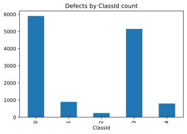
Images have at least one defect and there’s a small number of images with two or three defects.
counts = train_faulty["ImageId"].value_counts()
hist_counts, _ = np.histogram(counts.values, bins=3)
nums = ['1', '2', '3']
plt.bar(x=nums, height=hist_counts)
plt.title("Num of defects per images")
plt.show()
{i+1: c for i, c in enumerate(hist_counts)}{1: 6239, 2: 425, 3: 2}unique_imgs = train_faulty.describe(include='all')["ImageId"].T[:2]
unique_imgscount 7095
unique 6666
Name: ImageId, dtype: objectfig, ax = plt.subplots(1, 1, figsize=(7, 6.5))
ax.set_title("Count imgs", pad=30, fontdict={'fontsize': 14})
ax.xaxis.tick_top() # Display x-axis ticks on top
(
train[['ImageId', 'status']]
.drop_duplicates()
.status.value_counts().iloc[:-1]
.plot.barh(table=True, ax=ax)
)
plt.show()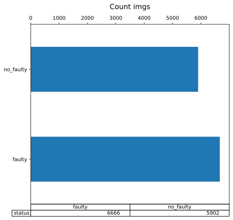
Loading the images for models requires some transformations to the DataFrames.
The get_train_pivot is the pivoted version of df. All the images are in the index, for each image the ClassId encoding values are in the columns.
train_pivot = get_train_df(path, pivot=True)train_pivot.head(2)| ClassId | 0 | 1 | 2 | 3 | 4 | n | ClassIds |
|---|---|---|---|---|---|---|---|
| ImageId | |||||||
| 0002cc93b.jpg | NaN | 29102 12 29346 24 29602 24 29858 24 30114 24 30370 24 30626 24 30882 24 31139 23 31395 23 31651 23 31907 23 32163 23 32419 23 32675 23 77918 27 78174 55 78429 60 78685 64 78941 68 79197 72 79452 77 79708 81 79964 85 80220 89 80475 94 80731 98 80987 102 81242 105 81498 105 81754 104 82010 104 82265 105 82521 31 82556 69 82779 27 82818 63 83038 22 83080 57 83297 17 83342 50 83555 13 83604 44 83814 8 83866 37 84073 3 84128 31 84390 25 84652 18 84918 8 85239 10 85476 29 85714 47 85960 57 86216 57 86471 58 86727 58 86983 58 87238 59 87494 59 87750 59 88005 60 88261 60 88517 60 88772 61 89028 53... | NaN | NaN | NaN | 1 | 1 |
| 00031f466.jpg | -1 | NaN | NaN | NaN | NaN | 1 | 0 |
count_pct(train_pivot, column='n')| num | freq | |
|---|---|---|
| n | ||
| 1 | 12141 | 0.966025 |
| 2 | 425 | 0.033816 |
| 3 | 2 | 0.000159 |
count_pct(train_pivot, column='ClassIds').sort_values("freq")| num | freq | |
|---|---|---|
| ClassIds | ||
| 2 4 | 1 | 0.000080 |
| 1 2 3 | 2 | 0.000159 |
| 2 3 | 14 | 0.001114 |
| 1 2 | 35 | 0.002785 |
| 1 3 | 91 | 0.007241 |
| 2 | 195 | 0.015516 |
| 3 4 | 284 | 0.022597 |
| 4 | 516 | 0.041057 |
| 1 | 769 | 0.061187 |
| 3 | 4759 | 0.378660 |
| 0 | 5902 | 0.469605 |
The get_classification_df allows to build a DataFrame to classification models. In ClassId_multi are listed the ClassIds separated by a space.
get_classification_df (df:pandas.core.frame.DataFrame)
Get the DataFrame for the multiclass classification model
train_multi = get_classification_df(train)
train_multi.head()| ClassId | ImageId | ClassId_multi |
|---|---|---|
| 0 | 0002cc93b.jpg | 1 |
| 1 | 00031f466.jpg | 0 |
| 2 | 000418bfc.jpg | 0 |
| 3 | 000789191.jpg | 0 |
| 4 | 0007a71bf.jpg | 3 |
count_pct(train_multi, column='ClassId_multi').sort_values("freq", ascending=False)| num | freq | |
|---|---|---|
| ClassId_multi | ||
| 0 | 5902 | 0.469605 |
| 3 | 4759 | 0.378660 |
| 1 | 769 | 0.061187 |
| 4 | 516 | 0.041057 |
| 3 4 | 284 | 0.022597 |
| 2 | 195 | 0.015516 |
| 1 3 | 91 | 0.007241 |
| 1 2 | 35 | 0.002785 |
| 2 3 | 14 | 0.001114 |
| 1 2 3 | 2 | 0.000159 |
| 2 4 | 1 | 0.000080 |
train_multi.describe(include='all')| ClassId | ImageId | ClassId_multi |
|---|---|---|
| count | 12568 | 12568 |
| unique | 12568 | 11 |
| top | 0002cc93b.jpg | 0 |
| freq | 1 | 5902 |
test_pfiles(#5506) [Path('../data/test_images/0000f269f.jpg'),Path('../data/test_images/000ccc2ac.jpg'),Path('../data/test_images/002451917.jpg'),Path('../data/test_images/003c5da97.jpg'),Path('../data/test_images/0042e163f.jpg'),Path('../data/test_images/004f40c73.jpg'),Path('../data/test_images/00513039a.jpg'),Path('../data/test_images/006f39c41.jpg'),Path('../data/test_images/008725cbc.jpg'),Path('../data/test_images/0098ca44e.jpg')...]test_df = pd.read_csv(path / 'sample_submission.csv')
test_df.head()| ImageId | EncodedPixels | ClassId | |
|---|---|---|---|
| 0 | 0000f269f.jpg | 1 409600 | 0 |
| 1 | 000ccc2ac.jpg | 1 409600 | 0 |
| 2 | 002451917.jpg | 1 409600 | 0 |
| 3 | 003c5da97.jpg | 1 409600 | 0 |
| 4 | 0042e163f.jpg | 1 409600 | 0 |
def old_rle2mask(rle: str, value: int, shape):
"""
From a RLE encoded pixels returns a mask
with `value` for defected pixels
(e.g. `value`=1 so 1 -> defected, 0 -> groundtruth)
and `shape` as tuple (height, width).
"""
assert len(shape) == 2, "The shape must be (height, width)"
assert isinstance(shape[0], int)
assert isinstance(shape[1], int)
h, w = shape
mask = np.zeros(h * w, dtype=np.uint8)
rle = rle.split(" ")
positions = map(int, rle[0::2])
length = map(int, rle[1::2])
for pos, le in zip(positions, length):
mask[pos:(pos + le)] = value
return mask.reshape(h, w, order='F')rle2mask (rle, value=1, shape=(256, 1600))
mask_rle: run-length as string formated (start length) shape: (width,height) of array to return Returns numpy array, 1 - mask, 0 - background Source: https://www.kaggle.com/paulorzp/rle-functions-run-lenght-encode-decode
item = train_faulty.iloc[1]
item_class_id = item["ClassId"]
item_rle = item["EncodedPixels"]
item_rle[:50]'18661 28 18863 82 19091 110 19347 110 19603 110 19's = item_rle.split()
how_many_values = 10
pixels = s[0:][::2]
lengths = s[1:][::2]
(pixels[:how_many_values], lengths[:how_many_values])(['18661',
'18863',
'19091',
'19347',
'19603',
'19859',
'20115',
'20371',
'20627',
'20883'],
['28', '82', '110', '110', '110', '110', '110', '110', '110', '110'])starts, lengths = [np.asarray(x, dtype=int) for x in (s[0:][::2], s[1:][::2])]
starts -= 1
starts, lengths(array([ 18660, 18862, 19090, 19346, 19602, 19858, 20114, 20370,
20626, 20882, 21138, 21394, 21650, 21961, 293124, 293380,
293636, 293892, 294148, 294404, 294660, 294916, 295172, 295428,
295684, 295940, 296196, 296452, 296708, 296964, 297220, 297476,
297732, 297988, 298244, 298563, 298944]),
array([ 28, 82, 110, 110, 110, 110, 110, 110, 110, 110, 110, 110, 110,
55, 251, 251, 251, 251, 251, 251, 251, 251, 251, 251, 251, 251,
251, 251, 251, 251, 251, 251, 251, 251, 251, 188, 63]))ends = starts + lengths
endsarray([ 18688, 18944, 19200, 19456, 19712, 19968, 20224, 20480,
20736, 20992, 21248, 21504, 21760, 22016, 293375, 293631,
293887, 294143, 294399, 294655, 294911, 295167, 295423, 295679,
295935, 296191, 296447, 296703, 296959, 297215, 297471, 297727,
297983, 298239, 298495, 298751, 299007])mask_img = np.zeros(256*1600, dtype=np.uint8)
for lo, hi in zip(starts, ends):
mask_img[lo:hi] = 1
mask_img[18658:18698]array([0, 0, 1, 1, 1, 1, 1, 1, 1, 1, 1, 1, 1, 1, 1, 1, 1, 1, 1, 1, 1, 1,
1, 1, 1, 1, 1, 1, 1, 1, 0, 0, 0, 0, 0, 0, 0, 0, 0, 0], dtype=uint8)item_mask = rle2mask(item_rle, 1)
show_image(item_mask, figsize=(15,5));make_mask (item, df, flatten=False)
*Given an item as: - row index [int] or - ImageId [str] or - file [Path] or - query [pd.Series],
returns the image_item and mask with two types of shapes: - (256, 1600) if flatten, - (256, 1600, 4) if not flatten,*
mask2rle (mask)
*Efficient implementation of mask2rle, from @paulorzp
img: numpy array, 1 - mask, 0 - background Returns run length as string formated Source: https://www.kaggle.com/xhlulu/efficient-mask2rle*
mask = rle2mask(item_rle)
rle = mask2rle(mask)
rle[:100]'18661 28 18863 82 19091 110 19347 110 19603 110 19859 110 20115 110 20371 110 20627 110 20883 110 21'test_eq(rle, item_rle)plot_mask_image (name:str, img:<built-infunctionarray>, mask:<built- infunctionarray>)
Plot a np.array image and mask with contours.
plot_defected_image (img_path:pathlib.Path, df:pandas.core.frame.DataFrame, class_id=None)
Plot a img_path Path image from the training folder with contours.
get_random_idx (n:int)
Return a random sequence of size n.
show_defects (path, df, class_id=None, n=20, only_defects=True, multi_defects=False)
Plot multiple images. Attributes: path: [Path] df: [pd.DataFrame] only train_pivot class_id: [str or int] select a type of defect otherwise plot all kinds; n: select the number of images to plot; only_defects [bool, default True]: if False it shows even the no faulty images; multi_defects [bool, default False]: if True it shows imgs with multi defects.
show_defects(path, train_pivot)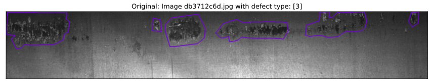
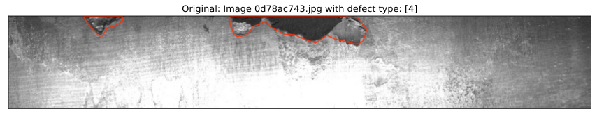
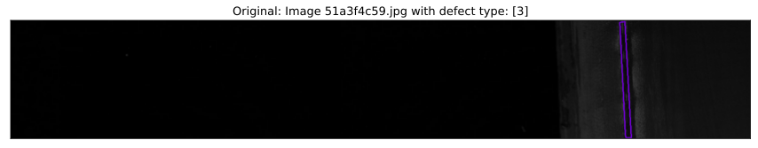
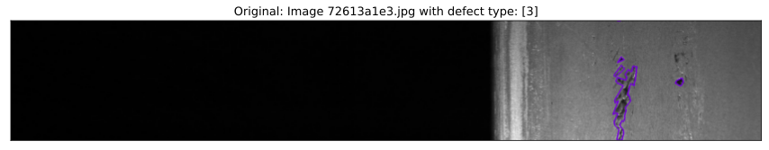
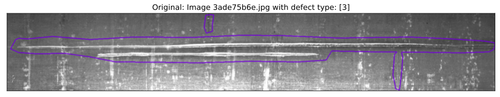

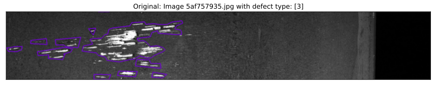
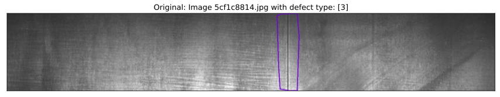
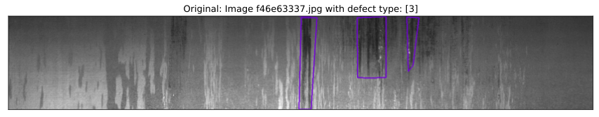
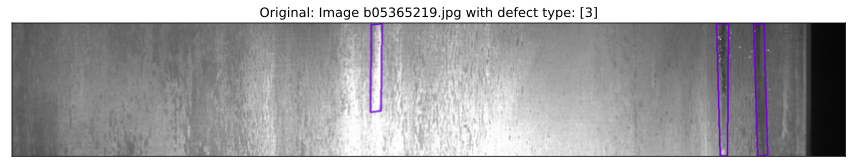
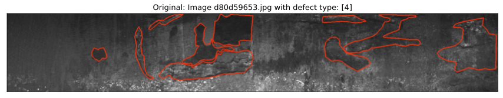
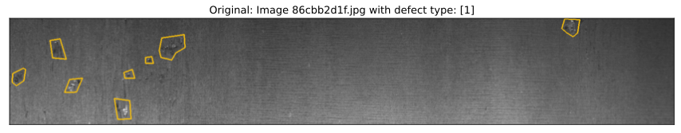
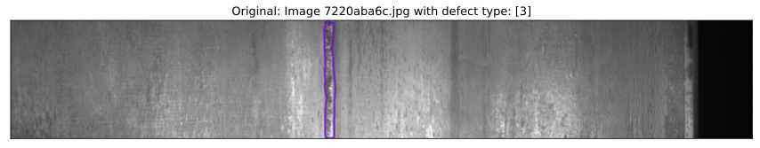
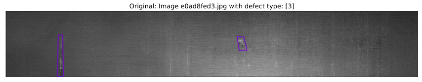